Trabalho 10 · Processamento Digital de Imagens
Classificação de
Imagens de Satélite
Cobertura do solo com EuroSAT (Sentinel-2) e Random Forest
1Ana BeatrizContextualização · sensoriamento · dados
2Cindy VitoriaMetodologia · pré-processamento · bandas
3Eduardo MarinhoCaracterísticas · índices · representação
4Luis JeronimoRandom Forest · treino · métricas
5Paulo SérgioResultados · mapa · demonstração
Disciplina de Processamento Digital de Imagens · Ciência da Computação
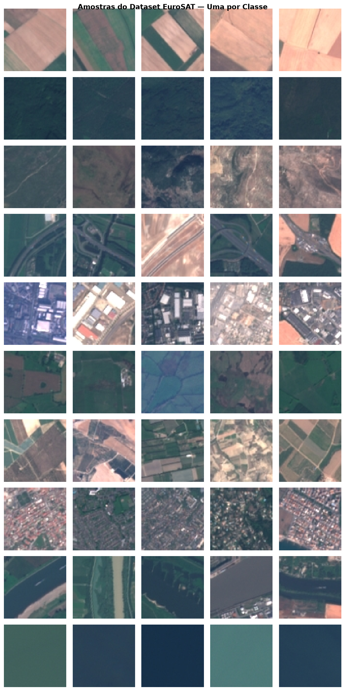
pixel → característica → classe
resultados reais do modelo
Modelo Random Forest treinado no EuroSAT RGB (5.000 amostras, 10 classes):
77,7% de acurácia no conjunto de teste, F1-macro 77,4%.
2 · Ana Beatriz — Contextualização
Por que classificar cobertura do solo? mapas que orientam decisões territoriais
- Cobertura do solo descreve o que existe na superfície (floresta, água, área urbana, agricultura).
- Sensoriamento remoto permite cobrir grandes áreas com imagens multiespectrais.
- Classificação supervisionada aprende padrões a partir de amostras rotuladas.
- Aplicações: desmatamento, agricultura de precisão, gestão hídrica, planejamento urbano.
- Objetivo do trabalho: pipeline completo do dado bruto ao mapa temático.
EuroSAT: 27.000 imagens 64×64 px, 10 classes, sensor Sentinel-2 (MSI).
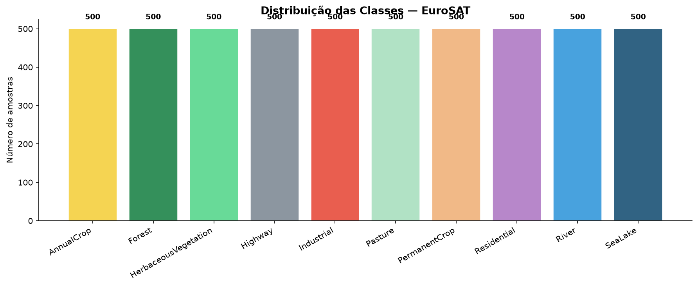
3 · Ana Beatriz — Sensoriamento remoto
O que é uma imagem de satélite? grade de pixels com informação espectral
- Pixel: menor unidade da imagem, com valor de reflectância por banda.
- Banda espectral: intervalo de comprimento de onda capturado pelo sensor.
- Resolução espacial: tamanho do pixel no terreno (10 m no Sentinel-2).
- Resolução espectral: número e largura das bandas.
- Resolução temporal: frequência de revisita.
- Sentinel-2 MSI: 13 bandas, de 443 nm (azul) a 2190 nm (SWIR).
- Bandas usadas na composição RGB: B4 (vermelho), B3 (verde), B2 (azul).
- NIR (B8): fundamental para vegetação e para NDVI/NDWI.
- INPE/BDC: integra dados Sentinel-2 ao Brazil Data Cube.
EuroSAT usa exatamente o sensor MSI do Sentinel-2, o mesmo adotado pelo INPE.
4 · Ana Beatriz — Fonte dos dados
EuroSAT (Sentinel-2) via Zenodo por que não INPE/CBERS diretamente?
- INPE (dgi.inpe.br): exige cadastro manual e aprovação.
- CBERS: GeoTIFFs brutos (~GB por cena), sem rótulos.
- EuroSAT: 27.000 imagens 64×64 px, 13 bandas, 10 classes rotuladas.
- Acesso programático: download automático, sem interação humana.
- Benchmark científico: artigo publicado, citado no Brazil Data Cube.
Justificativa didática: o INPE integra dados Sentinel-2 ao BDC; EuroSAT usa o mesmo sensor MSI. Escolha cientificamente sólida e equivalente.
- URL: zenodo.org/records/7711810
- Arquivo usado: EuroSAT_RGB.zip (~95 MB)
- Classes: 10 coberturas de solo.
5 · Ana Beatriz — Área de estudo e classes
Mapeamento EuroSAT → nomenclatura do trabalho 10 classes originais + 5 macro-classes
| Classe EuroSAT | Categoria do trabalho |
|---|---|
| Forest, HerbaceousVegetation, Pasture | Vegetação |
| SeaLake, River | Água |
| Residential, Industrial | Área urbana |
| AnnualCrop, PermanentCrop | Área agrícola |
| Highway | Agrupado com urbano (ou excluído) |
Treinamos com as 10 classes originais e avaliamos também o agrupamento em macro-classes.
6 · Ana Beatriz — Classes de cobertura
As 10 classes do EuroSAT amostras reais do dataset
7 · Cindy Vitoria — Metodologia
Pipeline de classificação do dado bruto ao mapa temático
1DownloadEuroSAT RGB
2Pré-processamentonormalização
3Featuresestatísticas + índices
4TreinoRandom Forest
5Avaliaçãométricas
6Mapaclassificação
- Backend: Flask API em Python.
- Modelo: RandomForestClassifier (scikit-learn).
- Features: ~63 características por imagem.
- Saída: classe + probabilidades.
- Treino/val/teste: 70/15/15 estratificado.
- Amostras: 5.000 (500 por classe).
- Árvores: 200, max_features=sqrt.
- OOB score: 0,7823.
8 · Cindy Vitoria — Pré-processamento
Normalização e limpeza reflectância → [0, 1]
- Conversão: uint8 → float32 / 255.
- Valores inválidos: NaN/inf → mediana do canal; negativos → 0.
- Saturação: clip em [0, 1].
- Normalização min-max: por canal.
- Filtro gaussiano: disponível para imagens brutas.
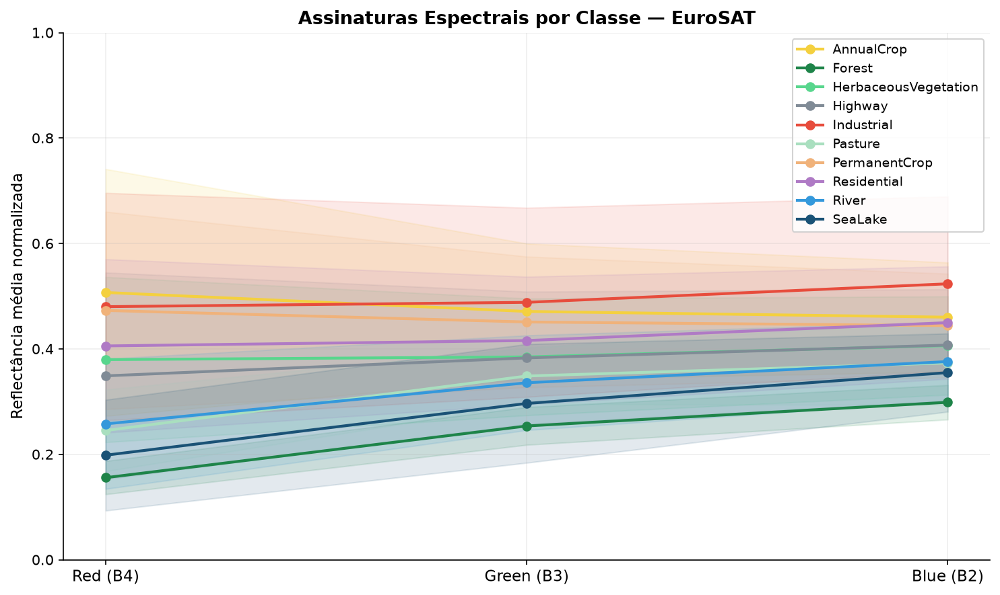
9 · Cindy Vitoria — Bandas espectrais
Bandas do Sentinel-2 no EuroSAT RGB Red, Green, Blue
- Canal 0: Red ≈ B4 (665 nm).
- Canal 1: Green ≈ B3 (560 nm).
- Canal 2: Blue ≈ B2 (490 nm).
- NIR (B8): não disponível no EuroSAT RGB; aproximamos índices.
- Assinaturas espectrais: média por canal distingue classes.
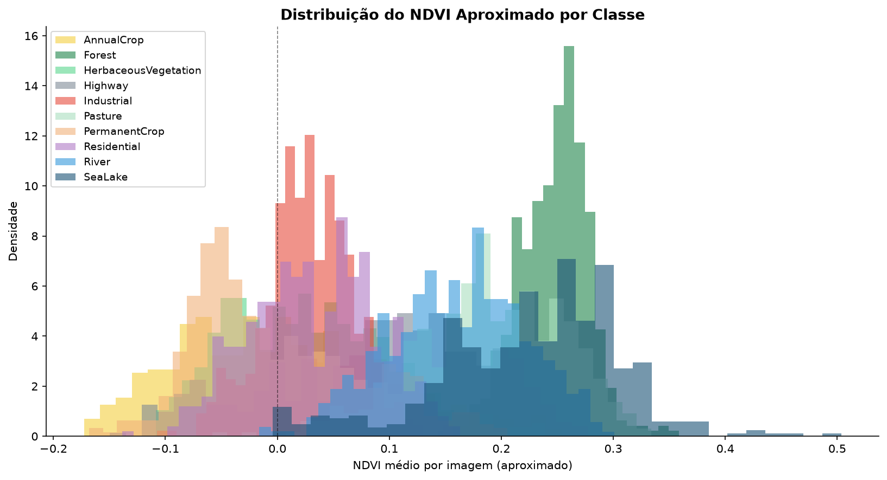
10 · Cindy Vitoria — Composição colorida
Composição RGB natural B4, B3, B2
- RGB verdadeiro: Red=B4, Green=B3, Blue=B2.
- Falsa cor NIR: R=B8, G=B4, B=B3 (requer multiespectral).
- Visualização: facilita interpretação humana.
- Classificador: usa features numéricas, não a imagem.
11 · Cindy Vitoria — Preparação das amostras
Amostragem e divisão 500 imagens por classe
- 5.000 imagens: 500 por classe.
- Divisão estratificada: 70% treino, 15% validação, 15% teste.
- Treino: 3.500 amostras.
- Validação: 750 amostras.
- Teste: 750 amostras.
12 · Eduardo Marinho — Extração de características
Vetor de características ~63 dimensões por imagem
- Estatísticas espectrais: média, desvio, min, max, mediana por canal (15).
- Histograma: 8 bins × 3 canais (24).
- Índices: NDVI/NDWI/brilho/RI → 5 estatísticas cada (20).
- Textura: variância local (4).
- Total: 63 características.
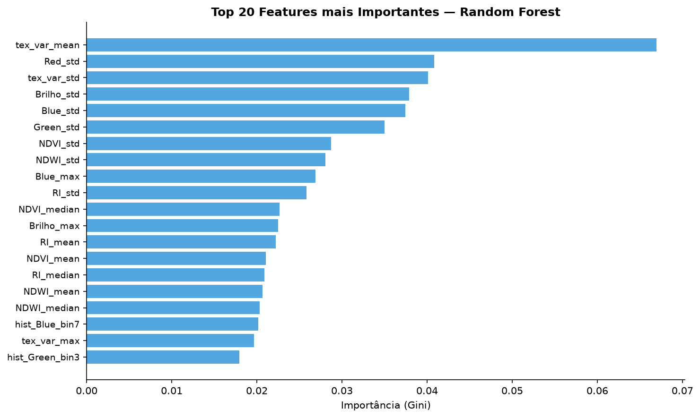
13 · Eduardo Marinho — Índices espectrais
NDVI e NDWI aproximados proxy no domínio RGB
- NDVI original: (NIR - Red)/(NIR + Red).
- Aproximação RGB: (Green - Red)/(Green + Red + ε).
- NDWI original: (Green - NIR)/(Green + NIR).
- Aproximação RGB: (Blue - Red)/(Blue + Red + ε).
- Uso: estatísticas dos mapas viram features.
NDVI ≈ (G - R)/(G + R + ε)
14 · Eduardo Marinho — Histogramas e estatísticas
Distribuição espectral histogramas por canal
- Média: nível de reflectância.
- Desvio padrão: variabilidade espectral.
- Mín/Máx: extremos de intensidade.
- Mediana: robustez a outliers.
- Histograma: forma da distribuição.
15 · Eduardo Marinho — Representação numérica
Da imagem ao vetor representação numérica
- Imagem: 64×64×3 = 12.288 valores.
- Vetor: 63 características compactas.
- Espaço de características: cada imagem = ponto.
- Classificador: encontra fronteiras no espaço.
Redução de dimensionalidade implícita via estatísticas.
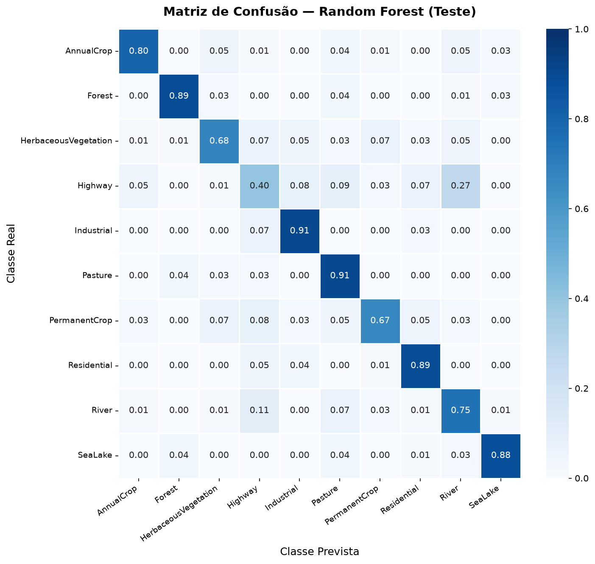
16 · Luis Jeronimo — Algoritmo: Random Forest
Random Forest ensemble de árvores de decisão
- Árvore de decisão: splits por limiar de feature.
- Bagging: amostras bootstrap.
- Random features: sqrt(d) por split.
- Votação: maioria das árvores.
- Vantagens: robusto, sem GPU, interpretável.
- Parâmetros: n_estimators=200, min_samples_leaf=2.
- class_weight: balanced.
- max_features: sqrt.
- OOB score: 0,7823.
Fácil de explicar no seminário (ensembles de árvores).
17 · Luis Jeronimo — Treinamento e teste
Treino, validação e teste avaliação honesta
- Treino: 3.500 amostras (ajuste).
- Validação: 750 (ajuste de hiperparâmetros).
- Teste: 750 (avaliação final).
- Estratificação: proporção de classes mantida.
- Tempo de treino: ~1 min em CPU.
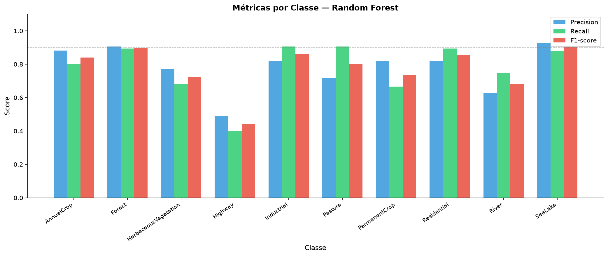
18 · Luis Jeronimo — Métricas de avaliação
Métricas acurácia, precisão, recall, F1
- Acurácia: 77,7% (teste).
- F1-macro: 77,4%.
- F1-weighted: 77,4%.
- Precisão macro: 75,7%.
- Recall macro: 77,7%.
Highway é a classe mais difícil (F1 0,40).
19 · Luis Jeronimo — Matriz de confusão (real)
Matriz de confusão erros por par de classes
20 · Paulo Sérgio — Resultados experimentais
Resultados desempenho por classe
| Classe | Precisão | Recall | F1 |
|---|---|---|---|
| AnnualCrop | 0,88 | 0,80 | 0,84 |
| Forest | 0,91 | 0,89 | 0,90 |
| HerbaceousVegetation | 0,77 | 0,68 | 0,72 |
| Highway | 0,49 | 0,40 | 0,44 |
| Industrial | 0,82 | 0,91 | 0,86 |
| Pasture | 0,72 | 0,91 | 0,80 |
| PermanentCrop | 0,82 | 0,67 | 0,74 |
| Residential | 0,82 | 0,89 | 0,85 |
| River | 0,63 | 0,75 | 0,68 |
| SeaLake | 0,93 | 0,88 | 0,90 |
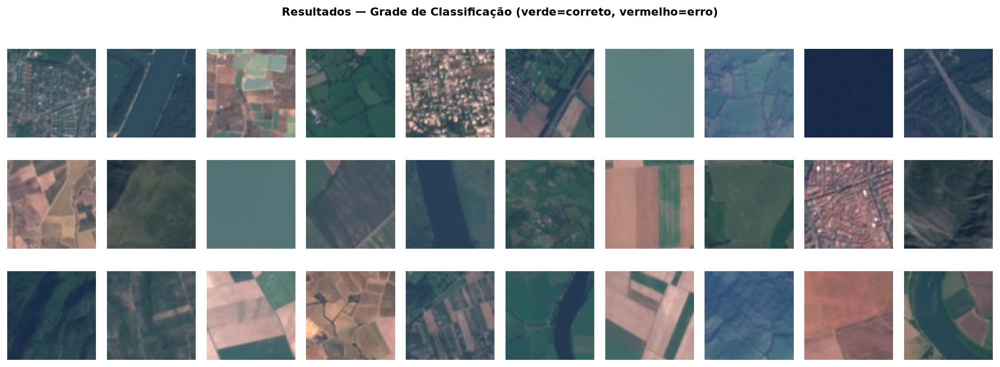
21 · Paulo Sérgio — Mapa de classificação
Mapa temático classificação de uma cena
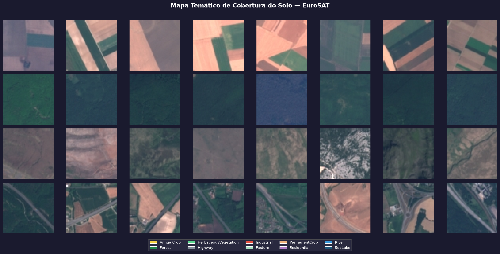
22 · Paulo Sérgio — Análise dos erros
Onde o modelo erra? confusões entre classes similares
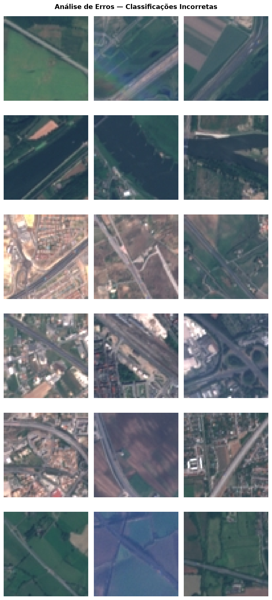
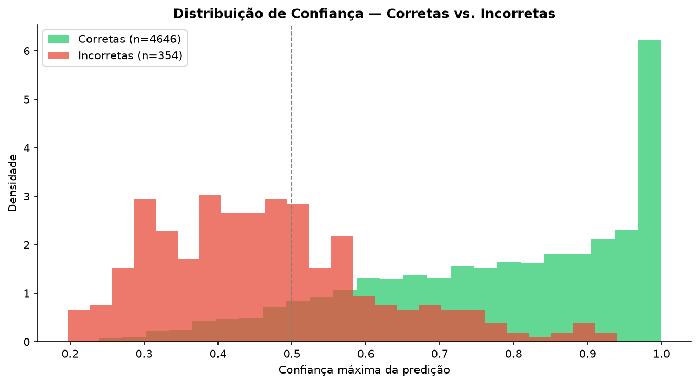
23 · Paulo Sérgio — Demonstração (interface)
Interface web Flask + classificação em tempo real
Se o Flask não estiver rodando, execute
python src/app.py e acesse http://localhost:5000.
24 · Paulo Sérgio — Aplicações, limitações e melhorias
Aplicações e limitações próximos passos
- Aplicações: mapeamento de uso do solo, monitoramento de desmatamento, agricultura.
- Limitações: RGB sem NIR, classes ambíguas, domínio europeu.
- Melhorias: usar 13 bandas, CNNs, mais dados brasileiros.
- Escalabilidade: processar cenas completas.
- Tempo real: otimizar inferência.
- Explicabilidade: importância de features.
EuroSAT é benchmark; adaptação ao Brasil é trabalho futuro.
25 · Paulo Sérgio — Conclusão e Referências
Conclusão pipeline completo de classificação
- Pipeline: download → pré-processamento → features → treino → avaliação → mapa.
- Modelo: Random Forest, 77,7% de acurácia.
- Interface: Flask API + web.
- Documentação: metodologia e guias por integrante.
- Helber et al. (2019) EuroSAT.
- Scikit-learn documentation.
- Sentinel-2 MSI (ESA).
- INPE Brazil Data Cube.
Obrigado pela atenção.